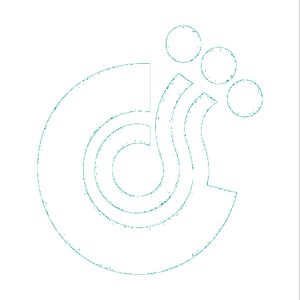

<header class="main-header">
  <!-- Logo -->
  <div class="logo">
    <span class="logo-mini">
      
    </span>
    <span class="logo-lg">
      
    </span>
  </div>
  <!-- Header Navbar: style can be found in header.less -->
  <nav class="navbar navbar-static-top">
    <!-- Sidebar toggle button-->
    <span class="title"><b>BUSINESS PROCESS MANAGEMENT - </b> </span>
    <a href="#" class="sidebar-toggle" data-toggle="push-menu" role="button">
      <span class="sr-only">Toggle navigation</span>
    </a>
    <div class="navbar-custom-menu">
      <ul class="nav navbar-nav">
        <li class="dropdown notifications-menu">
          <a href="#" class="dropdown-toggle" data-toggle="dropdown">
            <i class="fa fa-user text-white"></i>
          </a>
          <ul class="dropdown-menu">
            <li class="header">Корисник: </li>
            <li>
              <!-- inner menu: contains the actual data -->
              <ul class="menu">
                <li>
                  <a [routerLink]="">
                    <i class="fa fa-sign-out fa-fw text-aqua"></i> Одјави се
                  </a>
                </li>
              </ul>
          </ul>
        </li>
      </ul>
    </div>
  </nav>
</header>